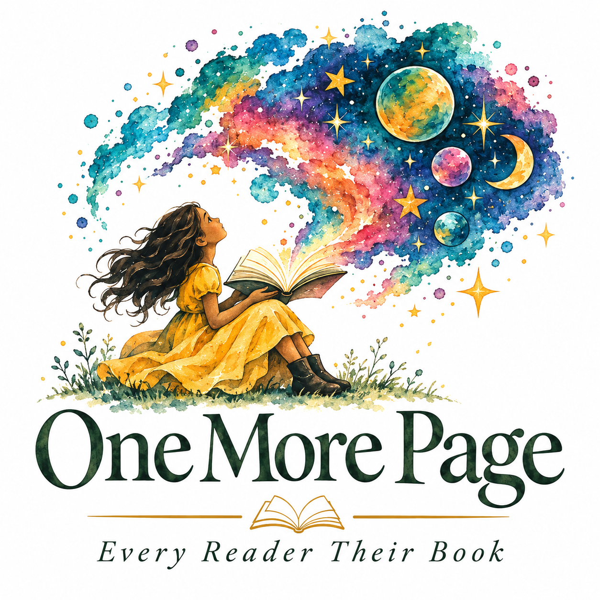

Welcome to One More Page
Every Reader Deserves a Story.
A community-driven literacy initiative bringing books, imagination, and connection to individuals and families facing difficult circumstances.
Discover Our MissionWhy We Exist
Our Mission
One More Page works to reduce barriers to recreational reading by connecting books with individuals and families in underserved communities.
We believe everyone deserves the freedom to discover stories that entertain, inspire, comfort, and connect. Through community partnerships and book donations, we hope to make that freedom more accessible.
Because Everyone Deserves One More Page.
The Story Behind the Project
About One More Page
One More Page began as a library and information science capstone initiative rooted in a simple belief: access to books should not depend on someone's circumstances.
Founded by a library and information science student passionate about community outreach, the initiative seeks to build meaningful partnerships with organizations serving people who face barriers to traditional library access.
Our goal is to create welcoming opportunities for readers to discover books they can enjoy and keep.
Let's Connect
Get Involved
Interested in partnering with One More Page, donating books, or volunteering? We'd love to hear from you.
Email Me